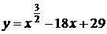

Авторский разбор и аудит предварительны; внешней экспертизы нет.
Модель автора: claude-opus-5-5 (opus; effort=low); в основных частотах: True ·
Впишите правильный ответ.
Найдите точку минимума функции 
КЭС: 4.1 Производная функции. Производные элементарных функций; 4.2 Применение производной к исследованию функций на монотонность и экстремумы. Нахождение наибольшего и наименьшего значения функции на отрезке
144
| ID / вход | Действие | Результат | Локальные KC |
|---|---|---|---|
| s1 · condition | Найти область определения функции y = x^(3/2) − 18x + 29 | x ≥ 0 | kc1 |
| s2 · condition | Найти производную функции | y' = (3/2)·√x − 18 | kc2 |
| s3 · s1, s2 | Решить уравнение y' = 0 на области определения | √x = 12, x = 144 | kc3 |
| s4 · s2, s3 | Определить знаки производной слева и справа от критической точки и выбрать точку минимума | y' < 0 при 0 < x < 144, y' > 0 при x > 144; x = 144 — точка минимума | kc4 |
[
{
"id": "m1",
"name": "Поиск точки экстремума через производную",
"step_ids": [
"s1",
"s2",
"s3",
"s4"
]
}
]Вход: выражение со степенью с рациональным нецелым показателем; операция: выписать ограничение на основание; граница: только степени с дробными показателями.
{
"local_kc_id": "kc1",
"status": "new_candidate",
"catalog_kc_id": null,
"evidence": [
{
"ref": "step:s1:action",
"quote": "Найти область определения функции y = x^(3/2) − 18x + 29"
},
{
"ref": "step:s1:result",
"quote": "x ≥ 0"
},
{
"ref": "image:assets/7fd6169cb69573a949070e7b.gif",
"region_description": "Вся формула: y = x в степени 3/2 минус 18x плюс 29"
}
],
"context_refs": [
"condition"
],
"alternatives_checked": [
{
"catalog_kc_id": "literal_a5938e1a7fec",
"reason": "Требует неотрицательности радикандов квадратных корней и проверки кандидатов; здесь объект — степень с дробным показателем, явного корня в записи нет, проверки кандидатов в шаге нет."
},
{
"catalog_kc_id": "literal_37584ab15732",
"reason": "Совместная область логарифма и корня; логарифма нет."
},
{
"catalog_kc_id": "power_laws",
"reason": "Преобразование степеней, а не установление области определения."
}
],
"rationale": "Операция — установить область определения степенной функции с рациональным нецелым показателем (x^(3/2) определена при x ≥ 0). Близкий узел про квадратные корни требует явного радиканда; переход x^(3/2)=x√x не показан, поэтому полного соответствия нет.",
"proposal": {
"definition": "Для степени x^(p/q) с нецелым рациональным показателем в школьной конвенции потребовать x ≥ 0 (x > 0 при отрицательном показателе) и записать область определения функции."
},
"blocking": false,
"issue_ids": []
}Вход: функция — сумма степенных функций с рациональными показателями и линейных членов; операция: применить правило производной степени и линейность; граница: без правил произведения/сложной функции.
{
"local_kc_id": "kc2",
"status": "match",
"catalog_kc_id": "literal_0efedaf04823",
"evidence": [
{
"ref": "step:s2:action",
"quote": "Найти производную функции"
},
{
"ref": "step:s2:result",
"quote": "y' = (3/2)·√x − 18"
}
],
"context_refs": [
"condition"
],
"alternatives_checked": [
{
"catalog_kc_id": "literal_3a3e1295118b",
"reason": "Только многочлены; x^(3/2) не многочлен."
}
],
"rationale": "Применено (x^p)'=p x^(p-1) к x^(3/2) и линейность к −18x+29; результат верен. Соответствует определению целиком.",
"proposal": null,
"blocking": false,
"issue_ids": []
}Вход: уравнение вида a·√x + b = 0; операция: выразить корень и возвести в квадрат с учётом неотрицательности; граница: один корень от переменной.
{
"local_kc_id": "kc3",
"status": "needs_split",
"catalog_kc_id": null,
"evidence": [
{
"ref": "step:s3:action",
"quote": "Решить уравнение y' = 0 на области определения"
},
{
"ref": "step:s3:result",
"quote": "√x = 12, x = 144"
}
],
"context_refs": [
"step:s1:result",
"step:s2:result"
],
"alternatives_checked": [
{
"catalog_kc_id": "stationary_point",
"reason": "Охватывает весь шаг s3 (решить f'=0 на области), но кандидат kc3 описан как алгебраическое действие над a·√x+b=0, а не как поиск стационарной точки."
},
{
"catalog_kc_id": "linear_equation",
"reason": "Покрывает только получение √x = 12 как линейного уравнения относительно √x, не снятие корня."
},
{
"catalog_kc_id": "literal_10490f2275e0",
"reason": "Покрывает возведение в квадрат при неотрицательных сторонах (√x = 12 → x = 144), но не выражение корня."
},
{
"catalog_kc_id": "literal_a30e088aef8f",
"reason": "Явной замены t=√x в решении нет."
}
],
"rationale": "Кандидат объединяет выражение корня из линейного уравнения (√x = 12) и снятие корня возведением в квадрат (x = 144). В контексте шага оба действия обслуживают нахождение стационарной точки.",
"proposal": {
"parts": [
{
"part": "Выразить √x из (3/2)√x − 18 = 0",
"possible_catalog_kc_id": "linear_equation"
},
{
"part": "Перейти от √x = 12 к x = 144 при неотрицательных сторонах",
"possible_catalog_kc_id": "literal_10490f2275e0"
},
{
"part": "Шаг в целом как решение f'=0 на области",
"possible_catalog_kc_id": "stationary_point"
}
]
},
"blocking": false,
"issue_ids": []
}Вход: производная и её нули на области определения; операция: определить знаки производной на интервалах и выбрать точку, где знак меняется с минуса на плюс (минимум); граница: непрерывная производная на интервалах.
{
"local_kc_id": "kc4",
"status": "match",
"catalog_kc_id": "local_extreme_sign",
"evidence": [
{
"ref": "step:s4:result",
"quote": "y' < 0 при 0 < x < 144, y' > 0 при x > 144; x = 144 — точка минимума"
}
],
"context_refs": [
"step:s2:result",
"step:s3:result"
],
"alternatives_checked": [
{
"catalog_kc_id": "derivative_monotonicity",
"reason": "Вывод о монотонности явно не сделан; результат — классификация точки."
},
{
"catalog_kc_id": "global_interval_extreme",
"reason": "Вопрос о точке локального минимума, не о глобальном экстремуме на отрезке."
}
],
"rationale": "Установлена смена знака производной с минуса на плюс в x = 144 и сделан вывод о минимуме — определение выполнено целиком. Знаки верны (y' возрастает по x).",
"proposal": null,
"blocking": false,
"issue_ids": []
}[]
[]
{
"author_path": "data/annotation/runs/2026-11-07-fipi-team-bogdan108-051-150/raw/author/3975C8.json",
"auditor_path": "data/annotation/runs/2026-11-07-fipi-team-bogdan108-051-150/raw/auditor/3975C8.json",
"accepted_after_review": null
}